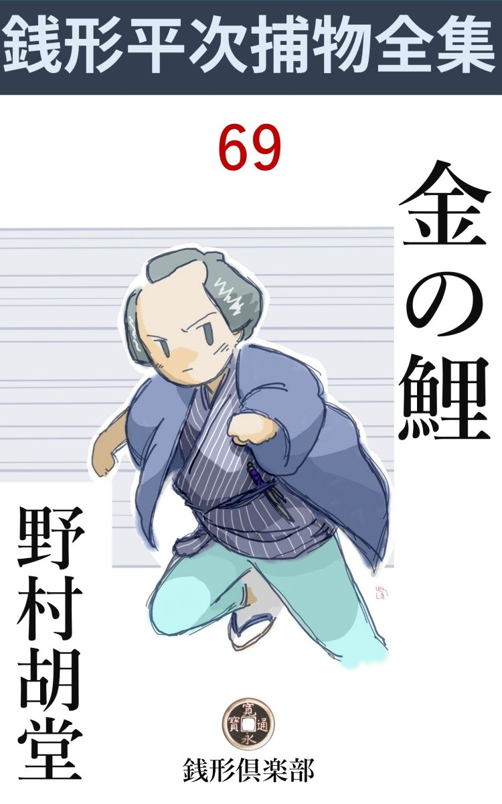
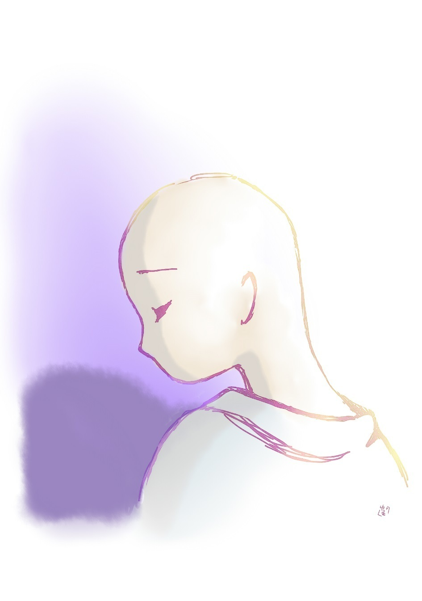

| 金の鯉: 銭形平次捕物全集第69話 (銭形倶楽部) | |
| 野村胡堂 | |
| ZENIGATA CLUB (2018) | |

一
江戸の大通 、札差百九人衆の筆頭に据 えられる大町人、平右衛門町の伊勢屋新六が、本所竪 川 筋 の置材木の上から、百両もする金 銀 象 嵌 の鱮竿 を垂れているところを、河童に引込まれて死んだという騒ぎです。
その噂を載 せて、ガラッ八の八五郎は疾風 の如く銭形平次のところへ飛込んで来ました。
「た、大変ッ」
「何だ、八。帯が半分解けているじゃないか、煙草入を何処へ振り落したんだ」
「それどころじゃねえ、親分。万両長者が土左衛門になったんだ------あ、水が欲しい」
「瓶 の中へ首でも突っ込んで、土左衛門になるほど呑むがいい。空 っ尻 の土左衛門の方が話の種になるぜ」
平次は驚きもしません。ガラッ八奴 何を面喰って飛込んで来やがった------と言った顔です。
「死んだのは平右衛門町の伊勢屋新六ですぜ、親分」
「金持が土左衛門になったところで、十手捕縄を持出すには及ぶめえ」
「それが、竪川で釣 をしているうちに、河童 に引込まれたんで------」
「まさか、河童を縛れというわけじゃあるまいね。河童や狸の退治なら御用聞を頼むより、武者修行か何かに頼む方が筋になるぜ」
もう戌刻 にも近かったでしょう。平次は遅い晩飯を済して、良い月を眺めながら、ぼつぼつ寝支度に取りかかろうと言う時、あわて者のガラッ八に飛込まれて、御機嫌甚 だ斜めです。
「懊 ったいね、親分」
「俺もじれったいよ。其処で首を振っていられちゃ、折角の良いお月様が拝めなくなる」
「それどころじゃねえ、------お月様は明日の晩も出るが、伊勢屋新六を突き殺した野郎は、明日になれば、涼しい顔をしてお月様か何か見ていますぜ」
「何？ 伊勢屋新六を突き殺した？ 河童 がかい？」
「河童なら尻 小玉 を抜くのが商法でしょう。突き殺すという術 は怪 物 にはない筈じゃありませんか、ね親分」
「------商法は変な言い草だが、突き殺したのが本当なら、髷 を結 った河童だろう。そいつは何時のことだ」
銭形平次もようやく本気になります。
「酉刻 （六時頃）ぎりぎり、金龍山の鐘が陰 に籠 ってボーンと鳴るのと、伊勢屋新六がドボンとやらかしたのと一緒だ」
「フ------ム」
「石原の兄哥 （利助）のところで油を売ってると、竪川からその知らせだ。お品さんは家中の若い者を一人のこらず現場へ出して、そっとあっし に言うことには------これは容易ならぬことになるかも知れない。子分達だけでは心細いから、すぐ銭形の親分のところへ飛んで行って下さい。お願いをしても聞いて下さらなかったら、首へ縄を付けても引張って来ておくれ------と」
「お品さんが------首へ縄を付けて------とは言うまい」
「それは物の譬 で」
「つまらねえ作 なんか抜きにして------それっ切りか」
と平次。
「それっ切りだが、石原の利助兄哥は中気で、動きが取れねえ。お品さん一人で気を揉 んでいるが、札差の伊勢屋新六が殺されたとあっちゃ、八丁堀の旦那衆も放って置きなさるめえ。行ってやって下さいよ、親分」
ガラッ八の八五郎は、思いの外の親切者でした。利助の娘のお品が、女だてらに、親父の縄張りを守っている苦心を思うと、本当に平次の首 根 っこへ、縄を付けても引張り出したい心持でしょう。
平次は黙って考え込みました。ガラッ八に口説 かれる迄もなく、お品を助けてやるに異論はありませんが、今から竪 川 の現場へ行ったのでは、どんなに急いでも亥 刻 （十時）近くなるでしょう。その前に何かする事はないものか、そんな事を思い廻らしているのでした。
「八」
「へエ------」
「手前 、足は早いな」
「馬ほどじゃありませんが、人間並には駆けますよ」
「竪川の材木置場まで、四 半 刻 （三十分）では何うだ」
「四つん這いになって行くんですかい、親分」
「馬鹿なことを言やがれ」
「四半刻ありゃ、亀戸の天神様へ行って有難いお札を頂いて帰って来ますよ」
「それじゃ大急ぎで飛んで行って、掛り合いの者を一人残らず集めて置いてくれ。何処かへ纏 めて、一人も外へ出しちゃならねえ」
「そんな事ならわけアありません」
「待て待て、糸目 の切れた凧 見たいな野郎だ」
「まだ話があるんで？」
「釣場 の材木に血が附いているなら、洗っちゃならねえ。血がなかったら、------斯 うと、伊勢屋新六の供の者や近所にいた者の髪 を見るがいい。男でも女でも構わねえ、髷 の中が湿 っているか、元 結 が濡れている者があったら、その場で縛り上げるんだ、解ったか」
平次の命令は細々 と行届きます。
「大解りだ、親分は？」
「後からそろりそろりと行く」
「それじゃ」
ガラッ八の八五郎は、飛びました。身上も軽く気も軽い男です。強健な三歳駒のように本所へ------。
二
その頃の釣の豪勢さは、物の本に僅かにおもかげを伝えて居ります。竪川筋の大名釣 は、置材木の上に金 襴 の座蒲団を敷き、後ろに金 屏風 を立てめぐらし、金銀象 嵌 の畳竿に 、当時の名 妓 の生 毛 を釣糸とし、茶器の贅 を尽し、酒食の豪華を競 い、印籠から練 餌 を出して、盛装の腰元に付けさせ、二寸足らずの鱮 や青 鱚 を釣って、悦 に入ったというに至っては、有閑無為の人達の贅が馬鹿馬鹿しくも気の毒になります。
伊勢屋新六は江戸の札差でも町人に違いはなく、まさか、金 屏風 をめぐらし、椎 茸 髱 の腰元に餌 をつけさせるような事はしませんが、番頭手代から、芸 奴 幇間 を引つれ、白粉臭い生きた屏風に取巻かれて一本百両の竿に、高尾、小紫の生 毛 をつけ、竪川の------その頃はよく澄んでいた水に、ポンと鉤 を投って、金 煙管 を脂 下 りに啣 えたことに何の変りもありません。
それが、薄暮の水の中に、河童と覚しき怪物に引込まれ、二の橋から迎えに来た船頭文次の船に、漁師の伊太郎の手で引上げられたのは、ほんの煙草二三服の後でしたが、頸筋を深々と刺されて、もう虫の息になっていたと言うのです。
銭形の平次が竪川の材木置場に馳付けたのは、戌刻半 （九時）そこそこ。思いの外の成績ですが、それでも、ガラッ八よりは四半刻近くも遅れました。
「親分、------掛り合いの人間を、庵 寺 の中へ一と纏 めにして置きましたよ」
ガラッ八はそれを迎えて、猟犬のような鼻を蠢 めかします。
「それは宜い塩梅 だ------髪の毛は？」
「一人も濡れたのなんかありません」
「じゃ、やはり河童の仕業 かな」
「冗談で、------親分」
「まア、いい、------気の毒だが、掛合いの人達に、因果 を含 めて、その庵寺から出ないようにしてくれ。評判のよくねえ人間だが、伊勢屋新六が殺されちゃ、お上が放っちゃ置くまい。お奉行所から何とか仰しゃる前に、下手人の目星だけは付けなきゃ------」
「今晩中にやる気ですかえ、親分」
「河童の元結や犢鼻褌 の乾かないうちに縛りたいところだ」
「へエ------」
平次はガラッ八に後を任せ、お品と利助の子分二三人を伴れて、現場の材木置場へ行きました。
良い月です。その上御用の提灯が二つ、平次の馴れた眼は、大抵のことを見逃しません。
「伊勢屋新六の増長は目に余りましたよ。町人の奢 り僭上 は、いずれおとがめものですが、伊勢新は悪く悧口で、なかなか尻尾を出しません」
「フム」
利助の子分の若松というのが説明してくれるのを、材木置場に立って、平次は神妙に聞きました。
「一 頃 は恐ろしい女道楽で、吉 原 から四宿、岡場所まで、掃 いて廻り、何十人、何百人の若い妓 を泣かせたか解りません。金があるに任せて大通気取りで荒し廻るのですから、内証の人気は大したものでも、妓共 からはこの上もない嫌われ者で、中には捨てられて入水した者、気の違ったもの、行方不知になったものもあるということです。三十七の男盛りで、何の因 果 か、伊勢新は全く好い男振りでしたよ」
「------」
「故郷の伊勢へ帰った時は、鳥羽 へ遊びに行って、松風村 雨 気取りの海 女 姉妹を手に入れ、さんざん弄 んだ挙句、江戸まで跟 いて来られ、一と騒ぎやったとか、------箱根の湯 女 に追っかけられて、命からがら江戸へ逃げ帰ったとか、独り者の気楽さも手伝って、底も果てもない放埒でした」
「それが、厄介なことに楊弓 、賭 け碁 、釣と、女道楽の片手間にやります。------今日なども現に、同じ札差の道楽仲間、お蔵前の板倉屋忠兵衛に冷かされたのが基 で、午 刻 過ぎから暮六つまでに、十匹釣ったら板倉屋が百両で買ってやる、十匹が一匹欠けても、伊勢屋が百両出すという約束で、六つの鐘が鳴るまで、------四方 はもうすっかり暗くなったのも構わずに、血眼になって釣って居たのだそうです」
「十匹釣れたのか」
と平次。
「九匹まで釣ったそうですよ、------あと一匹という時、暗くなりかけた水の中に、何か光る物があったんだそうです。伊勢新が乗出して覗いたところを、水の中から、毛むくじゃらな手が出て引込んだと言うんです」
若松は平次の立っているあたりを指しました。紬 の座蒲団は少し斜 になって、その下に敷いた茣 蓙 は、水へ二三寸落ちかけて居りますが、皎 々 と照らされた材木の上にも、敷物にも血の痕などは一つもありません。
竪川の水は、斜に上った月の光を受けて、ギラギラと光るだけ。底などは見える筈もなく、此処から平次も、何の手掛りを得られそうもなかったのです。
三
供の者は、番頭の平七と、漁師 の伊太郎と、芸妓が三人、年増のおさの、少し若いお国、一番若いお舟、いずれも仲町の良い顔、それに幇間 の理八、これが全部です。
それだけを、材木置場のすぐ裏の庵寺 に入れて、ガラッ八と利助の子分が、番犬のように頑張っているのですが、平次はそれらの人達に逢う前に、まだ舟の中においたまま、検 屍 を待っている、伊勢屋新六の死体を見ることにしました。
舟はそこからほんの十間ばかり、二つ目寄りに繋 いで、船頭の文次が、町役人といっしょに番をしております。
「あ、銭形の親分さん、御苦労様で------」
文次が驚いて挨拶するのへ、軽く会釈 を返して、平次の手は舟の中の菰 を剥ぎました。
「ウーム」
万両分限 も、こうなっては見る影もありません。何も彼もまだベットリ濡れて、出血のために青く引締った顔は、月の光の下に、不気味なほど人間離れがして見えます。右 頸 筋 に、下から突き上げた傷は、ささくれた肉を盛り上げて、ほとんど長方形に見えるのは恐ろしいうちにも玄 人 の眼をひきます。
「親分、これは何で突いたのでしょう」
若松はその傷を指しました。
「匕首 や刀ではないな」
「不思議ですね」
「河童の牙 が鑿 のようになって居るとは聞かなかったよ------下から突き上げたようだが」
平次の顔は、少しも冗談を言っている様子はありません。
平次とお品と子分等は、庵寺 へ引返しました。この上は男三人と女三人を、片っ端から調べるより外に方法はなかったのです。
最初に庵寺から引出して、月下の材木置場へ伴れて来られたのは、漁師の伊太郎でした。佃の 者で四十男。伊勢新の釣に網のお供をさせられますが、金にはなっても、人も無 気 な豪勢振りが、少し小癪 に障って居るらしい口吻です。
「あんまり奢 りがひどいから、こんな事にならなきゃ宜いがと心配して居ましたよ。あっし は稼業 だから来いと言われれば、何処へでもお供をしましたが、お手当祝儀を世間並の倍貰っても、百両の釣竿で鮒 や鱮 を釣るのを見ちゃ良い心持はしません。第一女郎の髪の毛で釣られちゃ、魚だって浮ばれるわけはねえじゃありませんか」
「すると、お前は、伊勢新が殺されてくれれば宜いと思ったのかい」
と平次。
「飛んでもない、------私の大事なお華客 様だ。百までも生きて貰いたいと思いましたよ」
伊太郎はあわてて自分に振りかかりそうな疑いを払いのけました。
「伊勢新が水へ落ちた時お前はどこに居たんだ」
「釣の邪魔になるからと言って、二つ目に置いた舟の迎えに行って、船頭の文次と二人で漕 いで材木置場の方へ来ていましたよ。すると、二三十間先の材木置場で、女の声がして」
「待ってくれ------女の声を聞いたのは、その時が始めてか」
「へエ、------暗くなりかけて、よくは解りませんでしたが、材木置場には女が二人、何か大騒ぎをしている様子でした」
「それから」
「びっくりして漕いで行くと、------旦那が------旦那が------と川を指して居るから、大急ぎで五六間のところへ行くと、人間が一人プカプカ浮いたり沈んだりして居るじゃありませんか」
「------」
「二人がかりで引揚げて見ると、それが伊勢屋の旦那で------水に落ちただけなら、伊勢生れの旦那は泳 げる筈ですが、あんなに喉 を突かれちゃ助かりっこはありません」
「それでも何か言ったか」
「介抱すると、たった一と言、------金 の鯉 ------と言ったようですが」
「金の鯉？」
平次はくり返しました。
「それっ切り息を引取って、誰が殺したか少しも解りません」
さすがに漁師の伊太郎は、河童説を信じてはいない様子です。
次に呼出されたのは幇間 の理八、五十がらみのよく肥った男で、小 唄 を上手に歌うのと、軽口がうまいので人気のある男芸者です。
「これは銭形の親分さん」
ヒョイと下げた頭、あんまりよく禿 げて居るので、前からでは髷 も見えませんが、後ろには若 干 の毛があり、真新しい元結が、よく油で塗り堅めた小指ほどの髷節を確 と締めて居ります。
「師匠は何処に居たんだ」
と平次。
「どうした事か、一刻ばかり前からひどく腹が痛くなって、我慢にも、外の風に吹かれちゃ居られません。仕方がないから、おさの姐さんと一緒に、庵 寺 の隣りの茶店の離れを借りて、休んでおりましたよ」
理八は額をツルリと撫で上げました。
「おさのも腹が痛かったのか」
「へエ------お店から持って来た、安倍川 餅 を二つ三つやると、半刻ばかり経って急に腹が痛み出しました。他の方は酒がいけるので、安倍川なんかに手は出しません。甘いのがいけるのは、私とおさの姐さんだけで」
「その安倍川餅の残りは何うした」
「竹の皮ごと川へ捨ててしまいましたよ」
「------」
平次は舌打をしたい心持でした。安倍川がなくては調べようがありません。
「でも、妙にほろ苦い安倍川でございましたよ。あんまり沢山食わなかったので、命拾いをしたのでしょう、へエ」
「それにしては達者じゃないか、毒などを食わされた人間のようじゃないが------」
「二度ばかり通じが付くと、ケロリと直ってしまいました。おさの姐さんも同じことだそうで」
「大黄 かな？」
平次は首を捻 りました。曲者は酒を呑まない二人を遠ざけるために、安倍川へ大黄を混入して、下 痢 を催 さしたと考えられないこともありません。砂糖を入れた大黄を、黄粉 のつもりでしたたかに呑んだだけなら、二三度通じが付いて、あとはケロリとして居るのもありそうなことです。
「------でしょうかな、親分さん」
理八はまだ俯 に落ちない顔をします。
「ところで、伊勢屋新六を怨 んでいる女は誰だろう？」
「江戸中の女の百人に一人位は怨んでいますよ、------何しろ金があって薄情で、男がよくて、口前がうまくて、浮気で、箒 で、ケチと来て居るんで」
「------」
あまりの痛罵 に平次は呆気 に取られました。ツイ先刻までは、伊勢新の腰へダニのように喰い付いて居た男です。死んで、もう一文にもならないと見ると、この男の毒舌には全く遠慮がありません。
「死んだ人を悪く言うようですが、嘘だと思ったら、おさのに聞いて下さい」
「そのおさのの事で、師匠は伊勢新を怨んでいるのだろう」
平次はズバリと言ってのけました。理八のいけ洒蛙 洒蛙 としたのが面憎かったのでしょう。
「と、飛んでもない、親分さん。怨んでるのは、お国姐さんとお舟姐さんで、あの二人は若くて綺麗だから、伊勢屋の旦那の人身御供 に上がった方で」
「あの茶店の離屋から材木置場へは、人目に触れないように来る道がある筈だ。二人で組んでやると、水へ入って来て、髪を結い直して、済 していてもちょっと解 るまいな」
「と、飛んでもない親分、この庵寺の尼さんじゃあるまいし、私は禿 げてもこの通り毛がありますよ。濡れた毛か濡れない毛か、よく見て下さい」
理八は泣き出しそうでした。自分の小さい髷 を摘 んで、平次の前へ執 拗 く持って来るのです。
「おさのは幾つだ」
「もう三十八で、へエ、伊勢屋の旦那より一つ年上ですよ。来年は私と世帯を持つ約束で、こんな事で人殺しの疑いなんか受けちゃ間尺に合いません」
理八はとうとう泣き出してしまいました。
四
続いて芸妓が三人、おさのの言うのは、理八と全く同じことで、何の変 哲 もありません。厳しい腹痛と離屋 と、それから下 痢 、と相談した以上に、細かいところまで口が合います。
次に呼出されたお国は、せいぜい二十一二、芸妓にしては年増ですが、仲 町 の芸妓らしく素顔に近い薄化粧で、少し青い顔も、唇のわななきも、抜群の美しさを隠しようはありません。
「何だって、伊勢屋を川へ突き落した」
「------」
平次の言葉の峻烈 さに、お国はハッと息を呑みました。美しい顔が真っ蒼になって、額口から、冷たい汗がにじみます。
「河童 のせいなどにしやがって、飛んでもねえ女 だ。お上にも御慈悲がある、伊勢屋の悪いこともことごとく承知だ。残らず言ってしまえッ」
「申します、親分さん」
お国はヘタヘタと材木の上に崩 折 れてしまったのです。月の光に濡 れたような袷、白い襟に後れ毛が絡 んで、------辛 くもあげた顔には悲しみと絶望の色が一パイでした。
「お舟と二人で突き飛ばしたことは解っている。が、どんな怨みがあった」
平次は日頃の平次になく峻烈です。
「妹は何にも知りません、------今晩帰ると、自分が人身御供に上げられることさえ知らずに居る妹ですもの」
「------」
「水の中に何か光る物があったのも、本当です。夕陽の具合で、いつも見えないものが材木置場から見えたのでしょう。それを私が教えると、伊勢屋の旦那は釣 竿 を片手に、材木の端っこまで乗出して水の中を眺めました」
「------」
「泳 ぎの自慢な旦那でした。伊勢とかで育ったそうで、------こんな川へ落したところで、まさか死ぬような事もあるまい、私も四五年前、あの人にはひどい目に逢いました。この上妹まで、獣 の餌 食 にしたくないばかり、------今晩が過ぎたら、何とかなるだろうと思う浅 墓 な考えから、突くともなしに、後ろから突いてしまいました」
「------」
「旦那が水に落ちると、何にも知らぬ妹は大きな声を出しました。私も思わず助けを呼ぶと、一度水に沈んだ旦那は、浮び上がって来て怖 い顔で私達を睨みましたが、水の中の光る者を捜 すつもりか、また底へもぐりました。------私と妹はもう怖くてそれを見ては居られません。思わず向うから来た舟を呼ぶと、旦那はもういちど水の上へ浮び上がって来ました。が、その時はもう怪 我 でもした様子で、滅茶滅茶に苦しんで、下へ下へと流れて行きました、------水は真っ赤になったようでした」
お国は言い了 ってガックリ首を垂 れました。
「それっ切りか」
「それっ切りでございます。銭形の親分さん、妹を助けてやって下さい。あの子は、何にも知りません」
「お前の言うのが本当なら助けてやる」
「お願い」
お国は手を合せます。
「が、伊勢屋の首を突いたのは、誰だ？」
「存じません」
「水へ突き落す時、後ろからやったのじゃあるまいな」
「そんな事が、親分さん」
その不合理さは平次自身にもよく解ります。が、人間が水の中で突かれるということも一寸想像の出来ないことでした。
いずれにしても怪しいのは水の中にあったという金色の一物です。夜の作業の無理を承知の上で、平次は船頭の文次と漁師の伊太郎を水に潜 らせることにしました。篝 を焚 き、松 明 を造り、青 砥 藤 綱 ほどの騒ぎをするのを、平次は宜い加減に眺めて、庵 寺 へ引返します。
外見は間違いもなく寺院風ですが、荒れに荒れて、戸も壁もあると言うは名ばかり。中は仏間と居間と台所だけの簡素 な造りで、そこに大きな疑 惧 を背 負 わされて、閉じ込められた六人の男女は、更くる夜とともに不安を募らせるばかりです。
庵主は三十前後の若い尼で、良 海 と名乗りますが、色の浅黒い、確 りした恰幅と、旅から旅を経めぐったらしい、風雨の洗礼が、何となく人柄を粗 野 に見せます。
青々とした剃 り立ての頭、目鼻立も醜 くはなく、念珠を爪 繰 って仏の御名を口から絶やさないのと、竪川べりを通る時は、贅沢な素人釣の後ろに立って、一くさりの経文 を手 向 ける癖があるので、釣好きの仲間からは、相当に煙たがられて居ります。
平次はこの尼に逢って、いろいろ訊ねましたが、半分は念仏を称 えているので、一向話が進みません。ただ、尼は関西の生れで、五年前に旅に出たこと、この竪川に住み付いて一年、町の人に請 われるまま、無住の庵室に住んで、朝夕仏に仕える外に仕事のない、行い澄ました日常が判っただけです。
それから、お国の妹というお舟にも逢って見ました。これは十六の小娘で、お国とは本当の姉妹、顔も美しさもよく似て居りますが、お国はこの稼業 の女らしく、不 摂 生 と心配で早老が目立って居るのに比 べて、お舟はまだ、木から取り立ての果物のように新鮮さが匂って居りました。野獣のような伊勢屋新六が、白羽の矢を立てたのも無理はありません。
平次の問 に対して、思いの外ハキハキと応えてくれますが、結局はお国の言った通り、何にも知らないことが判っただけです。
五
もう一人、庵寺に、囚 われた中に、番頭の平七が居りました。これは分別臭い四十男で、主人新六の遊び友達には少し固過ぎますが、何となく悧 巧 そうな男で、平次も一応は疑って見ましたが、間もなく、事件のあった四半刻前、平右衛門町の自宅へ主人の帰宅の先 触 に帰り、騒ぎを聞いて、酉 刻 半 頃また竪川へ駈け付けたのだと判って、これは疑いの外に置かれました。
その番頭の平七が、そっと平次に耳打をしたのです。
「旦那を突いたのは鑿 じゃございませんか」
「それは判って居る、------多分川の底から出て来るだろう」
「でも、庵寺の隣と------材木置場との間に、大工道具の置場がありますが------」
「何？」
平次は提灯を持たせてすぐ飛出しました。なるほど、材木置場に通う職人達の便宜のために建てたのでしょう。ほんの二た坪ばかりの物置があって、道具棚の下には、番人が寝泊りの出来るようになっていたのです。
開けて見ると、中は空 っぽ。
棚の上の道具箱をのぞくと、いちばん上に置いた鑿 が一挺、半ば乾きながらも、下になった半分は、したたかに濡れて居るのが見付かったのです。
「これだ」
取上げて見ると、刃 が脂 に曇って、血の痕 こそありませんが、人を突いた証拠が立派に揃っております。
鑿の持主はすぐ捜 し出されました。駒吉と言う若い男、まだ半人前ですが、人間が甘いのを可愛がられて、町内では知らない者もない人気者です。騒ぎの面白さに、自分の巣へも入らず、あっちこちと弥次馬について歩いて居るのを、これはガラッ八に首根っこを掴 まれました。
「俺は何にも知らねえ、鑿は俺の物に違いないが、人なんか突いた覚えはねえ」
平次が静かに訊いても、すっかり逆上 して、知らぬ存ぜぬの一点張です。
「それじゃ、小屋へ入って、道具を持出した人間を知らないか」
「知らねえ、知らねえと言ったら、何にも知らねえ」
これでは手の付けようがありません。
試 みに小屋へ行って見ると、壁と言ってもほんの筵 を吊っただけ、道具箱の在 所 さえ知って居れば、外から手を入れて鑿を取出し、人間一人水中で突いた上、元の場所へ返して置けないことはなかったのです。
「この辺の様子を知って居る者だろう」
平次もそう見当を付けるのに精一杯です。第一、駒吉の頭は水気どころか、ろくに油気もない始末で、火を附けたら、火 口 のように燃出しそうに見えるのです。
最後の一人、伊勢屋新六と百両の賭 をした、坂倉屋忠兵衛も登場しなければなりません。平次は気が付くとすぐ、お品に頼んで、利助の子分を二人走らせました。
お蔵前まで往復一刻足らず、何も彼も解ったところは、平次を落 胆 させるばかりでした。坂倉屋の言い分は、『百両の賭 はたしかにした。が、そんな事はありがちの事で、百両ばかりの金を取られるのが惜 しかったら、月に一人ずつ人殺しをしなければなるまい。------それはまア宜いとしても、今日は碁 の師匠が来て、昼頃から打ち始め、十番碁の今は七番目だから、夜中前には外へ出られる筈はない』という挨拶です。
金持の増長した言い草ですが、それが本当なら、どうすることも出来ません。
そのうちに川の方から、多勢の声高に話すのが聞えて来ます。
「親分、川の中から大変なものがあがりましたぜ」
ガラッ八が飛んで来ました。
「何だ、大変な物てえのは？」
「金の鯉」
「えッ」
平次も新しい糸口 を掴んだような気がして、飛んで行きました。
伊勢屋新六が、むき出しの頸筋 へあれ程の傷を受けて、材木置場に血の斑 点 もこぼさないのは、やはり水の中で突かれた筈で、水の中に謎 が潜 むとすれば、伊勢屋が断末魔に言った『金の鯉』という言葉が意味深長になります。
「親分さん、これが水の中にありました」
水から這い上がったばかりの、船頭文次の手の上には、金 鱗 燦 とした一尺ばかりの鋳 物 の鯉が載っているのです。
「------」
平次は黙って受取りました。音や貫々や、作の具合を見ると、銅に金 鍍金 をしたものらしく、安置物によくある品ですが、水に入ったのは昨今の様子で、大した変色もせず、錆 上 っても居ません。
作は拙劣 で、まず田舎の床の間でなければ通用しないものでしょう。引くり返して裏を見ると、それでも、勢州住人治郎兵衛作と銘 が入って居ります。
「------」
平次は次第に物事が判って来るような気がしますか、謎の性質が深いせいか、まだ核 心 には触れそうもありません。
「何刻 だろうな、八」
いきなり妙な事を聞く平次です。
「子刻 でしょうよ」
「泊めたら心配するだろう。みんな帰してくれ」
「へエ------」
「庵寺に止め置いた六人と、船頭を入れて七人、みんな帰してくれ。女どもは道が淋しかろう、乗物の世話をしてやるがいい」
「そんな事をして構いませんか、親分」
「下手人 はやはり河童 だよ」
「へエ------？」
ガラッ八は何が何やら解らずに、庵室 へ引返しました。が、しばらくして又戻って来ました。
「みんな帰りませんよ、------河童が下手人だというわけを聞かなきゃ、安心して帰って寝られないと言うんで」
「成程な、------好ましい事じゃないが、それでは河童の正体を教えてやろう。みんな庵寺へ集めて置くがいい」
「へエ------」
ガラッ八は有頂天の様子で戻ります。
六
「まず、第一に」
平次は四方 を見廻しました。狭い庵室の二た間を打っこ抜いて、十三四人は入ったでしょう。疑われたのも、疑われないのも、好奇心にすっかり夢中ですが、たった一人、庵 主 の若い良海尼だけは仏壇の前に端坐して、何やら口の中で誦 しつづけて居ります。
「第一に、伊勢屋新六を良く思っている人間は、この中に一人もいないのが不思議だ」
そう言えば、船頭も漁師も、幇間 も番頭も、腹の中では新六を怨むかさげすむか、とにかく良くは思っていない様子です。
「それから、疑って見ると、不思議なことに潔白 な人間は一人もない------」
平次は皆んなのけげんな顔を見ながら続けました。
「理八とおさのは、腹が痛くて茶店の離室 へ行ったと言うがあれは大嘘だ」
「親分さん」
理八は乗出しましたが、平次はそれに構わず続けました。
「いくら大黄 だって、そんなに急に腹が痛くなるわけはないし、怪しい安倍川を川へ捨てたというのもテニヲハの合わない話だ、------これはやはり二人で逢 引 するための拵 え事だろう。腹が痛いと言うことにして、離室で来年の春の事でも話していたに違いない、------尤も二人共 謀 になって、水の中の働きさえ出来れば、離室から抜出して楽に伊勢屋を殺せた筈だ」
「親分さん、私は徳利でございますよ」
理八はまた口を出します。
「文次と伊太郎も、二人共謀 になれば、伊勢屋を殺せる筈だ。二人共水に達者だから、一人が二三十間潜って、伊勢屋を刺 して来さえすればいい」
「飛んでもない親分------」
漁師の伊太郎はムキになりました。
「お国とお舟が二人力を協 せてやれば、これも伊勢屋を殺せる。いちど突き落して、材木へ泳ぎ付いて、這い上がろうとするところを、上から鑿 で頸筋を突けば------」
「鑿 の傷は下から突き上げておりますよ、親分」
今度はガラッ八が横槍を入れます。
「手前は黙って居ろ」
「------」
「番頭さんも途中から小戻りするという手があるし、駒吉も怨 があれば材木の蔭に隠れて、這い上がろうとするのを突けないことはない」
平次の論告は、とにもかくにも本当らしく聞えます。あまりの不気味さに、十三四人、黙りこくって顔を見合せました。
七
「ところで庵主さん」
平次は庵主の良海尼 に声をかけました。
「ハイ」
看経 を止めて、静かにふり向いた庵主の顔は、何と言う邪 念 のない平静さでしょう。
「この鯉の置物をどうして、川の中へ沈めて置きました」
平次の問いは予想外です。
「あ、それの事ですか、------あの人達が、あまり無益な殺生をするから、戒 めのために釣場の下へ沈めて置きましたよ。そのせいで一匹でも魚が助かれば、何かの供 養 になろうと思いましてな」
「成程、------ところで、庵主さんは、鳥羽の海で働いて居られたのでしょうな」
「------」
「海女 が鮑 を取る時は、水の中に潜 って、鑿 を使うと聞きました。水に潜ってあれだけ鑿を使えるのは、武芸の達人にも出来ませんよ」
「------」
「それから海女 は水の中へ商売道具の鑿 を捨てて来る筈はない。これが外の者なら、泳ぎ悪 いのを我慢して、血脂 のついた鑿を持って来て、濡れたまま元の場所におくのが反 って不思議だ」
「------」
恐ろしい静寂です。一座の人の顔は驚愕に化 石 しますが、良海尼だけは反って女らしい柔 かさと落着きを取戻して、何の恐るる色もなく静かに平次を見上げるのでした。
「伊勢屋を突いたのは、水中の働きに違いないが、この人数の中で頭の毛の濡れた人間は一人もない、------ところが------」
皆んなの眼は良海尼のよく剃 り丸めた、碧空 のような頭に膠着 しました。

「もう一つ、これは黙って居るつもりでしたが、裏口の盥 の中に、濡れた腰衣 と、白 無 垢 と、襦 袢 とがありましたよ」
「隠す気もなく隠したのでしょう、------私はまだ悟 り切れない------でも、何方 か罪に落ちそうになれば、名乗って出るつもりでした」
良海尼は静かに言うのです。
「庵主さんは、松風ですか、村雨ですか」
と平次。
「妹は、恋 い焦 れ、怨 み疲 れて死にましたよ。五年前の、------九月、ちょうど今日」
「で、あと一つだけ、聞きたいことは、あの鯉のことですが------」
平次は何となく、この尼だけは下手人扱いにする気がなかった様子です。
「悪性男は、------江戸一番の分限 と言いふらして、金 無 垢 の鯉で私の父親をたぶらかしました。あれがその時の金無垢の鯉ですよ、------銅に薄く金を着せたとは田舎者の眼が届きません」
「------」
「妹が死ぬと、父親も怨み死 に死にました。銅の鯉を餌 に娘二人まで捨ててしまったのですもの------、その間に、私ばかりは永らえて、はるばる江戸へ来たのは、あの悪性男に思い知らせるため、------そのうち師の御坊の教えで、しだいに昔の怨 も薄れ、心は一日ごとに澄み行きましたが、------」
「------」
良海尼は始めて涙を呑みました。
「この庵寺に住んでいるうち、ツイ眼の前の材木置場を釣場にして、三日に一度、五日に一度、豪勢な行列で殺生 に来るあの男を見ると、私の心には、昔の怨みが蘇 生 りました」
「------」
「金の鯉を釣場の下に投込んで思い知らせ、せめて真人間の心に返させるつもりでしたが、そのお国さんとやらが、悪性男を水の中に突落したのを見ると、あの男の重ねた罪 業 が目に見えるような気になり、この世の女 人 のために、------多勢の親と夫のために、------私は思わず、見覚えの小屋の道具箱から、手馴れた鑿 を取り、着物のままで、水の中に飛込んでしまいました」
「------」
「降 魔 利生 の鑿は岩から鮑 を剥 すよりも楽に、悪性男をあの世へ引渡してしまいました。これは、良いこととは少しも思いません。御仏に仕える身で、まア、私としたことが、何と言う大罪を犯してしまったことでしょう。南無------」
尼は仏壇の方に向直って、ヒタと掌 を合せました。滂 沱 と頬に流るるは声のない涙、------それに合せて、何処からともなくすすり泣く声が起ります。
一番先に畳にひれ伏したのは、お国、お舟の二人の姉妹でした。
「これで、何も彼も済んだ。皆んなの衆、遅くなったが引取って貰いたい。乗物も用意してある筈------」
平次は顔を起しました。
もう丑刻 近いでしょう。傾 く月が、障子のない窓を漏れて寒々と尼の項 を照します。
翌る日の朝、八丁堀から笹野新三郎出役。とにもかくにも形式通り大町人の変死を取調べました、河童に引込まれたとも、竪川の主の金の鯉の祟 であったとも言い、人の噂も平次の調べも一向要領を得ません。
やがて平次が蒟蒻 問答のような事を言うと、与力笹野新三郎はそれが解ったのか解らないのか、心得顔に引揚げてしまいました。
庵室は空っぽ、良海尼は前夜のうちに消えてなくなって、それっ切り帰って来なかったのです。
「驚いたね、親分、------どうしてあの尼さんと解ったんで？」
ガラッ八は執拗 に根掘り葉掘り訊ねます。
「頭の濡れないのは尼さんばかりだからさ。それに、松風村雨の話を聴いていたから、あの尼さんの伊 勢 訛 りで、フト気が付いたんだ」
「成程ね、まるで判じ物見たいだ」
「手前もその判じ物を当てるコツを早く覚えるがいい。物事を理詰に考えて、当てはまる絵解きが一つしかなくなるまで行くんだ。それが判じ物を解くコツさ」
平次はそう言ってカラカラと笑いました。如何にも快い心持そうです。
（編注）
作品中には、身体の障害や人権にかかわる、差別的な語句や表現が見られますが、本書が成立した当時の時代背景等が現代とは異なる古典的な文学作品でもあり、著者が故人でもありますので、底本のままとしました。ご理解、ご諒承のほどをお願い申し上げます。
著者---野村胡堂
挿絵---萩 柚月 © 2017
初出---「オール讀物」昭和十二年十一月号 文藝春秋社
底本---「錢形平次捕物全集」第四巻 河出書房 昭和三十一年六月三十日初版
編集・発行 銭形倶楽部